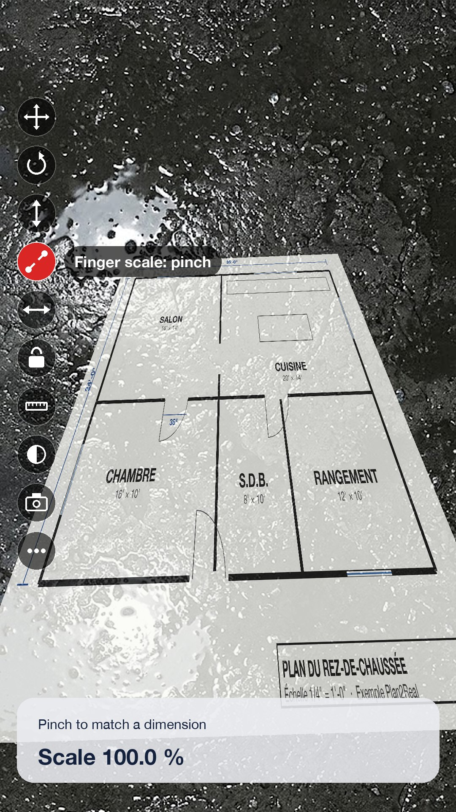

Everything Plan2Real does
A simple path, from the photo of the plan to the plan laid on the floor, then tools to adjust and share it.

Import the plan
Photograph the sheet or pick a file: the app keeps all of the plan's sharpness.
- Camera at the sensor's maximum resolution (48 MP on iPhone Pro), quality first, no flash
- An image from Photos or a file (PDF or image)
- PDF: the real page size is read, so a scale applies directly
- Your saved projects are in “My projects”

Straighten the sheet
A photo taken at an angle becomes a straight plan, with its true proportions.
- Automatic sheet detection, even on a board or a table
- 4 handles and a magnifier to aim at each corner precisely
- The sheet's true proportions are restored, even when shot at an angle
- “Whole image” for a plan that is already straight (screenshot, scan)

Set the scale
The scale is asked from the user rather than guessed: it's more reliable.
- Known distance: A and B on a dimension of the plan, then its length in meters or feet-inches
- Common scales: 1/16" to 1" = 1', 1:20 to 1:500, or 1:N
- Sheet sizes: Letter, Legal, Tabloid, ARCH C to E, A4 to A0
- The plan's real size is shown before you go to the floor

Lay the plan on the floor
The same aiming method as SITE DIM: the plan sits on the real surface, not in mid-air.
- Fixed target in the center: white, then green once the floor position is confirmed
- LiDAR first, otherwise a plane detected by ARKit; never a mere estimate
- Several aims are averaged: a reflection or a ledge can't throw off the height
- The plan is anchored to the real spot and stays put as you walk

On-floor tools
A column of round buttons on the left of the screen, as in SITE DIM. The function's name shows for 2 seconds, then fades: nothing hides the plan.
- ✥Move: drag one finger
- ↻Rotate: drag left or right, or use two fingers
- ↕Height: raise or lower the plan, to the centimetre
- 🤏Finger scale: pinch to match a dimension with a tape on the floor
- ↔Adjust the scale to a real dimension (e.g. a 36-inch door)
- 🔒Lock: no gesture moves the plan anymore
- 📏Measure between two points on the floor
- ◐Plan opacity
- 📷Photo to share
- •••Video, two-landmark alignment, quarter turn, place again
Save and come back on site
- The “Save” button stores the plan, its scale, landmarks A and B and its location on the floor
- Reopen the project on site: ARKit recognizes the place and the plan puts itself back
- Everything stays on the iPhone: no account, no server, no ads
Good to know
Difficult floors. Snow, wet or glossy floors, uniform gravel and low light make augmented reality harder. Aim at a textured area without reflections; the torch turns on by itself in the dark.
Large areas. On a lot, augmented reality can drift. Align the plan on two real landmarks (stakes, corners) to correct it.
Photocopied plans. Printing or photocopying distorts the scale: the “known distance” method corrects it.